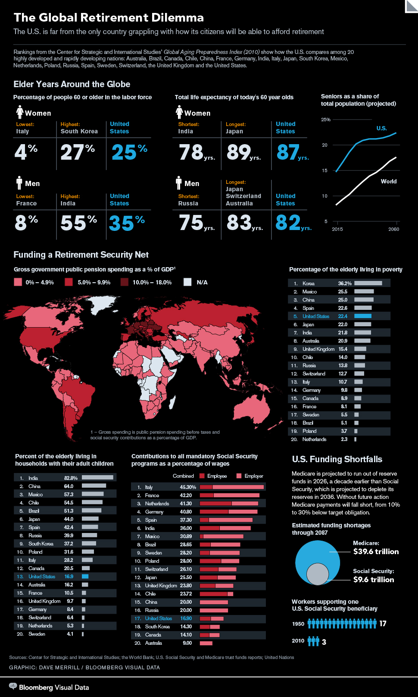

Visualization

This visualization from Bloomberg talks about the global Retirement crisis. Developed countries like the US currently
have a large population of elderly people who are out of the workforce. Since they are not contributing to the economy,
the rest of the working population must support them. However, as the percentage of non-working elderly grows, countries
like Korea, the US and Japan may not be able to support them.
Things I like about this visualization:
- Great constrast between foreground and background text throughout the image, making the text very readable
- Use highly saturated colors only in a few areas, and only when it is necessary to draw attention to an important statistic
- The image has a great layout which combines multiple charts and lists and highlights all the important statistics at the top
- Uses the color blue uniformly to highlight all the stats of the United States, whereas all the other countries are grey.
Since the human mind is much faster at picking out color differences
rather than text differences, the user can instantanously recognize where the US stands in every given ranking.
- Uses a sequential colour scheme for the map inforgraphic, with darker colors representing higher values of that quantity.
This is very intuitive for the use to understand rather than using random colours.